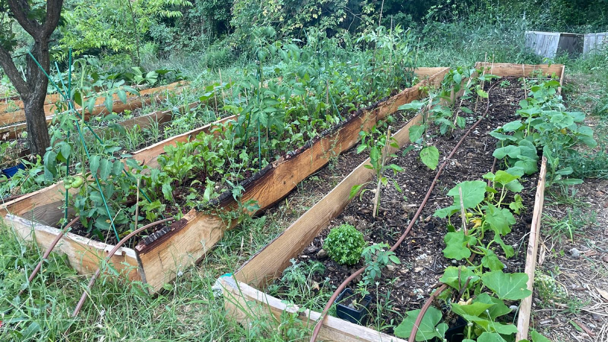
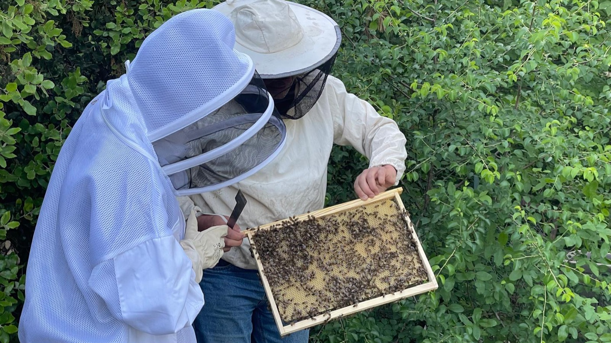
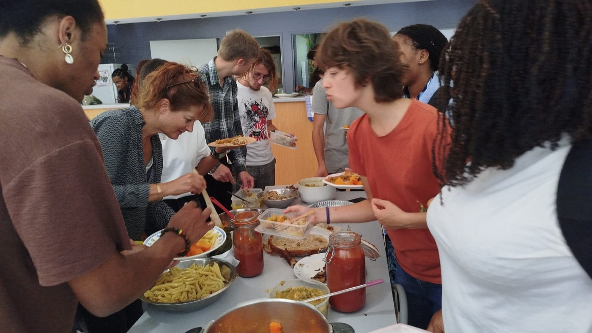

Qui sommes-nous ?
Les Racines Solidaires est une association d'étudiants de l'Institut Agro Montpellier, créée en mai 2024. Nous cultivons un potager d'environ 500 m² sur le site du pôle tropical et méditerranéen (l'ancien IRC), derrière le bâtiment principal, au 1101 avenue Agropolis.
On y fait pousser des légumes en agroécologie, sans produits chimiques, et on les partage avec les étudiants, en particulier ceux qui ont du mal à se nourrir correctement. Le potager est aussi un endroit pour apprendre en faisant, à côté des cours.
Au potager
Le travail se fait à plusieurs, en semaine et le week-end selon les disponibilités de chacun :
- semis, plantations, paillage et entretien des planches, en plein champ et sous serre ;
- compost, et un arrosage goutte-à-goutte automatique pour tenir pendant les vacances ;
- deux ruches, suivies avec un apiculteur ;
- des récoltes distribuées aux étudiants, membres de l'asso ou non ;
- des repas et des soirées au potager avec ce qu'on a récolté.

Les sangliers passent souvent par là. Il a fallu renforcer les clôtures et installer une clôture électrique sur panneau solaire pour protéger les cultures.


Ateliers
Chaque année, nous invitons des enseignants-chercheurs et des professionnels à venir animer des ateliers au potager, ouverts aux étudiants. Au programme de 2025-2026 :
- design agroécologique d'un potager (septembre) ;
- observation de la macrofaune du sol (novembre) ;
- initiation à l'éco-sophrologie (décembre) ;
- installation d'un système d'irrigation et compostage (janvier) ;
- taille des arbres fruitiers (février) ;
- initiation à l'apiculture et fabrication de bokashi (mars).
Nous rejoindre
Pas besoin de savoir jardiner. Si vous êtes étudiant sur le campus et que vous voulez donner un coup de main, écrivez-nous : on vous ajoute au groupe WhatsApp du potager, où l'on s'organise pour les sessions de jardinage, les récoltes et les ateliers.
Enseignants, professionnels, associations : si vous voulez animer un atelier ou travailler avec nous, contactez-nous aussi.
Contact
Par mail : lesracinessolidaires@gmail.com
Sur LinkedIn : Les Racines Solidaires